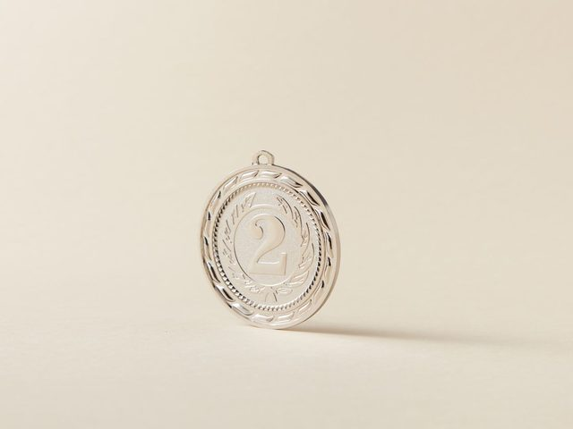
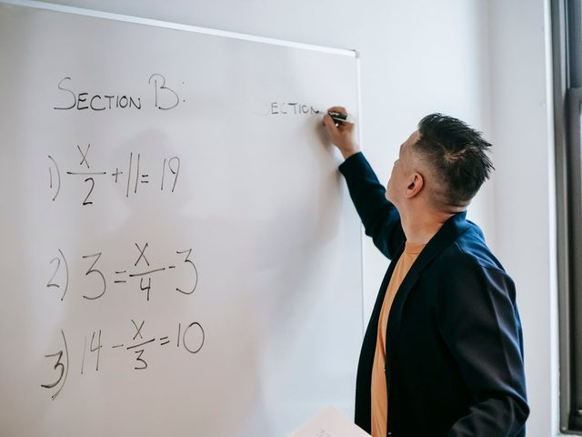

LALA WORD · UNIT 3
一字多義（三）
Sports Day
13 個單字一字多義
本單元單字一覽
運動會上，跑第二名是 second，跑完也可以說 The race is over。這個單元有 5 個主題單字、6 個更多單字，再整理 date／day、on／above／over、they're／their／there，和字首 un-（unhappy、unlucky）。
aroundbacksecondonlyoverbearcleandateexamplenextrightunhappyunlucky
每個字先聽 🔊，再一個意思一個意思看例句。
1. around 主題單字．5 個意思

around
prep.圍繞
The moon goes around the Earth.
月亮繞著地球轉。
adv.轉身；轉過來turn around 轉身
Turn around and look at me.
轉過來看著我。
adv.到處look around 到處看；show… around 帶…參觀
We walked around the night market.
我們在夜市到處逛。
adv.在附近around the corner 在轉角；即將到來
Is there a bank around here?
這附近有銀行嗎？
adv.大約
I get up around six o'clock.
我大約六點起床。
2. back 主題單字．6 個意思
back
back - backed - backed - backing
adv.向後
Please step back from the door.
請從門邊往後退。
adv.回到原來的樣子give back 歸還；pay back 還錢
My hair will grow back soon.
我的頭髮很快就會長回來。
adv.回覆；返回
I'll call you back later.
我等一下再回你電話。
n.背部back to back 背靠背；連續地
My back hurts after playing basketball.
打完籃球我的背好痛。
v.倒退
Dad backed the car out of the garage.
爸爸把車倒出車庫。
v.支持back up 支持；備份
Don't worry. We will back you up.
別擔心，我們會支持你。
3. second 主題單字．5 個意思

second
second - seconded - seconded - seconding
adj.第二的；再一次的a second time 再一次；second-hand 二手的
This is my second time in Japan.
這是我第二次來日本。
n.第二名
Tom came second in the race.
Tom 賽跑得第二名。
adv.其次
First, wash your hands. Second, set the table.
首先洗手，其次擺好餐具。
n.秒in seconds 一下子；馬上
Wait a second, please.
請等一下。
v.贊成
A: Let's order pizza. B: I second that!
A：我們叫披薩吧。 B：我贊成！
4. only 主題單字．3 個意思

only
adv.只；僅；才only + 數字 才…；only when 只有在…的時候
I have only ten dollars.
我只有十塊錢。
adv.剛剛（only just）only just 才剛…
The movie has only just started.
電影才剛開始。
adj.唯一的only child 獨生子女；the only way 唯一的方法
Lucy is an only child.
Lucy 是獨生女。
5. over 主題單字．7 個意思

over
adj.結束的
The game is over. We won!
比賽結束了，我們贏了！
prep.超過
Over 300 students came to the show.
超過三百個學生來看表演。
prep.在…上方；覆蓋
A bird flew over our heads.
一隻鳥從我們頭上飛過。
prep.在…期間
What did you do over the summer?
你暑假做了什麼？
prep.從（病、難過）恢復
He is over his cold now.
他感冒已經好了。
adv.到（某處）come over 過來；over there 那邊
Come over here and sit with us.
過來這裡和我們一起坐。
adv.再一次；反覆over and over 一再；start over 重新來
I made a mistake, so I started over.
我寫錯了，所以重新來過。
6. bear 更多單字．4 個意思
bear
bear - bore - born（borne） - bearing
n.熊
The bear is catching fish in the river.
熊在河裡抓魚。
v.忍受
I can't bear the noise anymore.
我再也受不了這個噪音了。
v.生（孩子）；結（果實）
This apple tree bears a lot of fruit.
這棵蘋果樹結很多果實。
v.承受（重量）
Can this old bridge bear a heavy truck?
這座舊橋撐得住重型卡車嗎？
7. clean 更多單字．3 個意思

clean
clean - cleaner - cleanest；clean - cleaned - cleaned - cleaning
adj.乾淨的
Keep your room clean.
保持你的房間乾淨。
adj.俐落的；漂亮的
He made a clean shot and scored.
他漂亮地一投得分。
v.把…弄乾淨clean up 清理
Let's clean up the classroom.
我們來打掃教室吧。
8. date 更多單字．5 個意思

date
date - dated - dated - dating
n.日期set a date 訂日期
What's the date today?
今天幾月幾號？
n.約會；約會對象have a date with 和…約會
He has a date with Amy on Friday.
他星期五和 Amy 有約會。
v.在…寫上日期
Please date the letter before you send it.
寄信前請寫上日期。
v.和…交往
They have been dating for two years.
他們已經交往兩年了。
v.使過時
Those old phones really date the movie.
那些舊手機讓這部電影顯得很過時。
9. example 更多單字．3 個意思

example
複數 examples
n.例子for example 例如；follow the example 照範例
Can you give me an example?
你可以給我舉個例子嗎？
n.榜樣set an example 樹立榜樣
Big brothers should set a good example.
哥哥們應該樹立好榜樣。
n.警惕（make an example of）make an example of 以…為戒
The teacher made an example of the boy who cheated.
老師拿作弊的男孩來殺雞儆猴。
10. next 更多單字．3 個意思
⏭️
next
adj.下一個的next time / week / year 下次／下星期／明年
See you next week!
下星期見！
adj.旁邊的next to 在旁邊；next door 隔壁
Come and sit next to me.
來坐我旁邊。
adv.接下來
What should I do next?
我接下來該做什麼？
11. right 更多單字．5 個意思

right
複數 rights
adj.正確的be right about 判斷正確
You got the right answer!
你答對了！
adj.右邊的
Raise your right hand.
舉起你的右手。
adv.向右
Turn right at the corner.
在轉角右轉。
adv.立刻；正好right now 現在；立刻；right away 立刻
Come here right now!
馬上過來！
n.權利
Every child has the right to go to school.
每個孩子都有上學的權利。
12. unhappy 更多單字．1 個意思

unhappy
unhappy - unhappier - unhappiest
adj.不快樂的；不滿意的be unhappy about 對…不滿
She was unhappy about her test score.
她對考試分數不滿意。
13. unlucky 更多單字．1 個意思

unlucky
unlucky - unluckier - unluckiest
adj.不幸的；倒楣的
Some people think 13 is an unlucky number.
有些人認為 13 是不吉利的數字。
易混淆字：date 和 day
| 單字 | 用法 | 例句 |
|---|---|---|
| date | 幾月幾號（特定的日期） | What's the date today? It's May 20. |
| day | 一天、星期幾 | What day is it today? It's Wednesday. |
易混淆字：on／above／over
| 單字 | 用法 | 例句 |
|---|---|---|
| on | 在…上面，有接觸 | The cup is on the table. |
| above | 在…上方，沒有接觸；也可以表示「高於」 | The lamp is above the table.／kids aged 7 and above |
| over | 在…正上方；常有「越過、覆蓋」的動作感 | The cat jumped over the table. |
發音一樣：they're／their／there
| 單字 | 意思 | 例句 |
|---|---|---|
| they're | ＝ they are 他們是 | They're my classmates. |
| their | 他們的（後面接名詞） | Their dog is very cute. |
| there | 那裡；There is / are 有… | There are two cats over there. |
字首 un-：「不」或「相反」
| 原來的字 | 加 un- | 意思 |
|---|---|---|
| happy 快樂的 | unhappy | 不快樂的 |
| lucky 幸運的 | unlucky | 不幸的 |
| kind 親切的 | unkind | 不親切的 |
| lock 鎖上 | unlock | 打開（鎖） |
unhappy、unlucky 的比較級要把 y 改成 i：unhappier、unluckiest。
快問快答：這句的 粗體字 是什麼意思？
1I get up around six o'clock.大約
2Don't worry. We will back you up.支持
3A: Let's order pizza. B: I second that!贊成
4Lucy is an only child.唯一的
5I made a mistake, so I started over.再一次；反覆
6Can this old bridge bear a heavy truck?承受（重量）
7Let's clean up the classroom.把…弄乾淨
8Those old phones really date the movie.使過時
快問快答：這句的 粗體字 是什麼意思？
1The teacher made an example of the boy who cheated.警惕（make an example of）
2What should I do next?接下來
3Every child has the right to go to school.權利
4She was unhappy about her test score.不快樂的；不滿意的
5Some people think 13 is an unlucky number.不幸的；倒楣的
學完了！接下來
複習方法
review
- 回到「📗 單字卡」，按「遮中文」，看例句說出每個意思
- 特別記「容易忽略的意思」（例如 pen 圍欄、ball 舞會）
- 每個例句跟著 🔊 唸一次
準備好了
- 按右上角「📝 前往測驗」
- 測驗錯的題目要訂正到全對
- 訂正完成補送 1 點